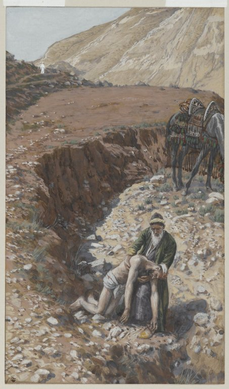

Lucas 10 — La Traducción Mister

⚠ Tissot pinta el propio camino como el verdadero peligro de la historia, antes de que ninguna figura haga nada. La quebrada domina la composición —empinada, desnuda, aislada—, a juego con la propia nota de esta traducción sobre el descenso real de Jerusalén a Jericó (v30): un desnivel genuinamente remoto, de unos mil metros a lo largo de unos veintisiete kilómetros, tristemente célebre en la antigüedad precisamente por esta clase de emboscada. La pequeña figura vestida de blanco que camina por la cresta, fácil de no ver a la primera, es la callada acusación propia del cuadro —sea el sacerdote, el levita, o sencillamente cualquiera que ya pasó de largo.
_-_James_Tissot.jpg){kind=link}
Notas del traductor — versículo por versículo
Cada nota explica la elección de esta traducción y compara las versiones del estante. Las citas de versiones con derechos de autor se mantienen en frases cortas para comparación; la RV 1909 y la RV60 son de dominio público en su edición base.
⚠ Setenta, o setenta y dos — el número más disputado de los Evangelios, y aquí se disputa dos veces. Los testimonios se dividen tanto por antigüedad como por cifra. La KJV inglesa, la ASV y el texto bizantino mayoritario leen «setenta» tanto en el v1 como en el v17, lectura que también lleva el Sinaítico (siglo IV) —pero el manuscrito sustancial más antiguo de este Evangelio, el Papiro 75 (h. 175–225 d.C., emparentado de cerca con el Vaticano en todo Lucas), lee «setenta y dos» (hebdomēkonta dyo) en ambos versículos, de acuerdo con el Vaticano y en contra del Sinaítico; el propio texto base del SBLGNT (Westcott-Hort) y el NA28 siguen ese par más antiguo, y esta traducción también. Ningún número es relleno simbólico: setenta recuerda a los setenta ancianos de Números 11:16 (ya en estas páginas) y a las setenta naciones de Génesis 10 (ya en estas páginas); setenta y dos recordaría en cambio el número de traductores que la leyenda posterior atribuye a la Septuaginta. Ningún evangelista explica la cifra, y ni siquiera las dos Biblias completas más antiguas, el Vaticano y el Sinaítico, están de acuerdo entre sí sobre cuál llevaban sus modelos.
⚠ «De dos en dos» — y ni siquiera la duplicación misma está asegurada. Ana dyo dyo, literalmente «por dos, dos», repite el numeral como el hebreo duplica una palabra para dar sentido distributivo (compárese «grupo por grupo» y «filas, filas» de Marcos 6:39–40, ya en estas páginas) —pero los testimonios más antiguos que esta traducción sigue para «setenta y dos» son precisamente los que TAMBIÉN llevan la forma duplicada aquí, mientras que otras copias tempranas simplifican al distributivo griego ordinario, un solo ana dyo, «de dos en dos» sin más, con el mismo sentido llano y sin el sabor semítico. De cualquier modo, los doce enviados en el capítulo anterior fueron en un solo grupo; esta compañía mayor va deliberadamente emparejada.
⭐⭐ «Corderos en medio de lobos» no tiene paralelo en el envío de los Doce. El envío más breve de Lucas 9 (ya en estas páginas) nunca dice quién representa el peligro; este lo nombra abiertamente antes de dar una sola instrucción. Mateo conserva una imagen casi idéntica en otro envío, «ovejas en medio de lobos» (Mateo 10:16, ya en estas páginas, todavía no en español) —el arnas de Lucas, corderos, es la más vulnerable de las dos palabras, un cordero y no una oveja adulta.
⚠ Más estricta que la lista de los Doce, un artículo más. La nota de Lucas 9:3 ya rastreó el acuerdo de Lucas con Mateo contra Marcos en bastón, alforja, pan y dinero; este envío descarta también las sandalias (v4) —un artículo que ninguna de las dos listas anteriores menciona, y lo contrario del permiso explícito de Marcos 6:9 de llevarlas. La misión mayor y posterior viaja más ligera que la primera.
«No saluden a nadie por el camino» (v4) no es simple descortesía, sino un modismo de urgencia que ya tiene la Biblia hebrea: Eliseo envía a Guiezi por delante con su bastón y la misma instrucción: «si encuentras a algún hombre, no lo saludes» (2 Reyes 4:29, todavía no en estas páginas) —un saludo en aquel mundo era toda una transacción social, no un gesto al pasar, y ambos mandados son demasiado urgentes para perder ese tiempo.
«Un hijo de paz» (v6) es un modismo de forma hebrea que aflora en el griego de Lucas —«hijo de X» para alguien caracterizado por X, no un parentesco literal (compárese «Hijos del Trueno», Marcos 3:17, ya en estas páginas). La paz que pronuncian los mensajeros se trata como algo real, casi físico: puede reposar sobre una casa digna, o volver, sin gastar, a quien la pronunció.
⭐⭐ El sacudir del polvo ya pertenece a este Evangelio. Lucas 9:5 (ya en estas páginas) da a los Doce el mismo gesto en palabras casi idénticas, «sacudan el polvo de sus pies como testimonio contra ellos»; aquí se detalla en discurso directo, la frase exacta que los setenta y dos deben decir en voz alta en la calle, y no solo una indicación de qué hacer. Mateo y Marcos dan la misma instrucción solo a los Doce (Mateo 10:14; Marcos 6:11, ambos ya en estas páginas) —este es el único Evangelio que la da dos veces, a dos misiones distintas.
⚠ Sodoma, no Tiro y Sidón, es la PRIMERA comparación —y la más dura espera dos versículos. Una ciudad que rechaza a estos mensajeros se mide primero contra Sodoma (v12), arquetípica en esta biblioteca por una hospitalidad rechazada de forma catastrófica (Génesis 19, ya en estas páginas); solo después, en el aliento siguiente, contra Tiro y Sidón (vv13–14, más abajo) —una segunda comparación que resulta ser todavía menos indulgente, puesto que el paralelo de Mateo mide a Sodoma específicamente contra Capernaúm (Mateo 11:23–24, ya en estas páginas) y no contra cualquier ciudad que simplemente no da la bienvenida.
⭐⭐⭐ Corazín es maldecida por nombre y luego nunca vuelve a mencionarse en toda la Biblia. De los tres pueblos galileos nombrados aquí, Corazín (v13) es el único del que los Evangelios no registran ningún milagro, ninguna visita, ninguna escena en absoluto —nada más que la acusación desnuda de que «la mayoría de sus obras poderosas» ocurrieron allí. Lo que sea que mereció el ¡ay! quedó tan sin registrar como, al parecer, sin arrepentimiento.
La propia pregunta de Capernaúm se responde a sí misma. «¿Acaso serás enaltecida hasta el cielo?» (v15) está formulada como pregunta solo para ser respondida por su propia cláusula siguiente —humillada hasta el Hades—: el pueblo que albergó más ministerio galileo de Jesús que ningún otro recibe el vuelco más agudo de los tres.
⭐⭐ Una cadena de cuatro verbos une la acogida de una aldea hasta llegar a Dios mismo. El v16 cierra todo el envío con una cadena: escuchar a los setenta y dos es escuchar a Cristo; rechazarlos es rechazarlo a él; y rechazarlo a él es rechazar «al que me envió» —el mismo lenguaje de cadena de autoridad que Lucas 9:48 (ya en estas páginas) ya usó de un niño recibido en el nombre de Jesús. Atheteō, «rechazar», es una palabra legal y comercial para anular o dejar sin efecto un acuerdo, más fuerte que una simple negativa.
⭐⭐⭐ «Yo estaba viendo», no «yo vi» —el tiempo griego es imperfecto, no una sola mirada completa. Etheōroun (v18) describe una acción continua, en desarrollo, y no un solo instante —más cerca de «yo seguía viendo» o «yo iba contemplando» que el «yo veía» que comparten la RV60, la RV 1909 y la NVI. La TNM 1987 es la única que conserva algo del sentido continuo, «contemplaba yo», aunque su revisión de 2019 lo aplana a un presente llano, «veo». Esta traducción conserva el sentido continuo que el tiempo griego realmente lleva. Si la caída misma es la visión de un suceso primordial, una descripción de lo que la misión de los setenta y dos está logrando en tiempo real, o ambas cosas a la vez, es una pregunta que este versículo por sí solo no resuelve —véase la entrada de Satanás para el patrón más amplio al que pertenece esta imagen.
⚠ El texto bizantino convierte esto en una afirmación más llana, sin «santo». Los testimonios más antiguos que esta traducción sigue dicen que Jesús «se regocijó en el Espíritu Santo» (v21, más abajo); el texto mayoritario posterior lee en cambio «Jesús se regocijó en espíritu», eliminando tanto el título divino como la referencia al Espíritu como persona distinta. La lectura más antigua es también la más rica en teología, lo cual es en sí mismo una razón por la que algunos críticos textuales la sopesan con cautela —pero cuenta con el respaldo manuscrito más fuerte y más temprano.
Alegría redirigida, no cancelada. Jesús no dice a los setenta y dos que su alegría del v17 esté mal; les dice DÓNDE debe estar esa misma alegría. El poder sobre «el enemigo» (v19) es real y ha sido dado, pero no es lo que hay que celebrar —un nombre escrito en el cielo (v20) sí lo es. La imagen de nombres inscritos en un registro celestial recurre en el Nuevo Testamento (compárese Apocalipsis 20:15, todavía no en estas páginas) como un registro fijo y permanente, no un éxito momentáneo.
⭐⭐⭐ La frase más joánica de cualquiera de los tres primeros Evangelios. La afirmación mutua y exclusiva de conocimiento entre el Padre y el Hijo del v22 —nadie conoce al Hijo sino el Padre, nadie conoce al Padre sino el Hijo— se lee tanto como el Evangelio de Juan que los lectores del Nuevo Testamento la han apodado «el relámpago joánico en un cielo sinóptico». Mateo tiene el dicho idéntico, casi palabra por palabra (Mateo 11:25–27, ya en estas páginas).
⭐⭐ Solo Lucas lo enmarca con una emoción. Mateo entra directo a la oración; Lucas abre con Jesús «regocijándose en el Espíritu Santo» (v21) antes de que se pronuncie una sola palabra de ella —otro ejemplo del hábito propio de este Evangelio de enmarcar un momento importante en torno a Jesús orando (véase Lucas 9:18 y 9:28–29, ambos ya en estas páginas, para el patrón).
⭐⭐ «Niños pequeños» frente a «los sabios y entendidos» invierte la propia jerarquía de la cultura. Nēpiois (v21) nombra a quienes no tienen posición alguna para reclamar una comprensión acreditada —no eruditos humildes, sino gente que todavía no tiene edad para haber aprendido nada. Lo que se esconde de los sabios no se retiene como un acertijo que resolver con inteligencia; se da a quienes no podrían haberlo ganado con inteligencia, para empezar.
⚠ «Quién es el Hijo… quién es el Padre» —Lucas formula el conocimiento mutuo como identidad, no simple trato. El griego pregunta QUIÉN (tis) es cada uno, el Hijo y el Padre, no meramente que se conocen el uno al otro como dos personas podrían conocerse. La versión de Mateo del mismo dicho usa la misma construcción, así que esto no es una redacción propiamente lucana —pero vale la pena nombrarlo con claridad en vez de suavizarlo a un simple «lo conoce».
⭐⭐ Dicha en privado, solo a los discípulos. El v23 repite el mismo marco privado que este Evangelio ya usó justo antes de la confesión de Pedro, «volviéndose a los discípulos… en privado» (compárese Lucas 9:18, ya en estas páginas) —la multitud que acaba de ver regresar a los setenta y dos no es la audiencia de esta bendición en particular.
«Profetas y reyes» —el paralelo de Mateo nombra solo a profetas y justos. La versión de Mateo de esta misma bienaventuranza dice «muchos profetas y justos desearon ver…» (Mateo 13:17, ya en estas páginas); Lucas sustituye «justos» por «reyes» —una diferencia pequeña pero real sobre quién se nombra como habiendo querido, y no habiendo recibido, lo que los Doce y los setenta y dos acaban de recibir.
⭐⭐⭐ El mismo doble mandamiento que citan tres sinópticos, y ninguno de los tres enumera sus cuatro términos en el mismo orden. La versión de Marcos de esta misma cita de Deuteronomio (Marcos 12:29–30, ya en estas páginas, donde su propia nota ya rastreaba por delante esta misma discrepancia) enumera corazón, alma, mente, fuerza; la de Mateo tiene solo tres, y deja caer fuerza en favor de mente (Mateo 22:37, ya en estas páginas); la de Lucas aquí (v27) corre corazón, alma, fuerza, mente —los mismos cuatro términos de forma hebrea que usa Marcos, en otro orden. El hebreo de Deuteronomio tiene solo tres (corazón, alma, y me’od, «con todas tus fuerzas») —y el Nuevo Testamento nunca se decidió por un único equivalente griego para el tercero.
⭐⭐⭐ Como esto cita directamente Deuteronomio 6:5, esta traducción lee «Jehová tu Dios», no «el Señor tu Dios». La misma elección ya se hizo en Marcos 12:30 y en Mateo 22:37 (ambos ya en estas páginas, citando la misma cláusula) —el Nuevo Testamento imprime el nombre divino donde cita un texto que lo tiene, y este es uno de esos lugares.
⚠ El experto en la ley, no Jesús, da la respuesta —y aquí es el mismo interlocutor quien luego hace una segunda pregunta para escapar de ella. Marcos y Mateo hacen que un ESCRIBA haga la pregunta y que Jesús mismo dé el doble mandamiento, con el escriba repitiéndolo después (Marcos 12:28–33; Mateo 22:36–40, ambos ya en estas páginas). Lucas invierte los papeles: el experto en la ley responde su propia pregunta cuando Jesús se la devuelve (vv26–27), se le dice llanamente «haz esto y vivirás» (v28), y solo ENTONCES, «queriendo justificarse a sí mismo» (v29), hace la pregunta que lanza la parábola. El mandamiento es terreno común en los tres sinópticos; solo Lucas lo convierte en algo que el experto ya sabía y necesitaba que se le presionara más.
«Poner a prueba», el mismo verbo que usó el desierto con Jesús mismo. Ekpeirazōn (v25) es el verbo idéntico que usa el diablo en la tentación, citando Deuteronomio contra Jesús «para ponerlo a prueba» (Lucas 4:12, ya en estas páginas, donde Jesús responde «no pondrás a prueba a Jehová tu Dios»). Un experto en la ley que sondea a Jesús con una pregunta lícita y bien formulada queda enmarcado con la misma palabra que la tentación abierta del desierto.
⭐⭐⭐ La parábola no existe en ningún otro lugar del Nuevo Testamento. Ni Mateo, ni Marcos, ni Juan registran al buen samaritano; es propia solo de Lucas, y responde «¿quién es mi prójimo?» con una historia y no con una definición. ⚠ No transcurre en el camino que una aldea samaritana le negó a Jesús un capítulo antes (Lucas 9:51–56, ya en estas páginas) —aquella ruta cruzaba la propia Samaria, mientras que esta corre entre Jerusalén y Jericó, bien al sur y al este de ella: un descenso genuinamente empinado y aislado de unos mil metros a lo largo de unos veintisiete kilómetros, conocido en la antigüedad precisamente por esta clase de emboscadas. La hostilidad étnica es la misma; la geografía no —a un oyente que todavía escuece por el rechazo de una aldea samaritana se le pide, un capítulo después, que haga de un samaritano el único héroe de la historia.
⭐⭐ El sacerdote y el levita no son condenados por una frialdad que el texto declare —solo por lo que HACEN. No se da la razón de ninguno de los dos para pasar de largo: los lectores llevan mucho tiempo suponiendo un temor a la impureza por contacto con un cadáver (un sacerdote que tocara un cuerpo posiblemente muerto quedaría descalificado para su servicio, Levítico 21:1–3, ya en estas páginas), pero la parábola misma no da ningún motivo, solo el verbo desnudo «pasó por el otro lado» (antiparēlthen), repetido idéntico para ambos (vv31–32). El silencio es deliberado: sean cuales sean sus razones, la historia no los deja explicarse.
«Sintió compasión» —un verbo que los Evangelios dan sobre todo a Jesús mismo, y que ya una vez perteneció al amo de una parábola. Splanchnizomai está en nueve versículos del Nuevo Testamento. Jesús es su sujeto narrado cinco veces —conmovido ante una multitud dos veces (Mateo 9:36; 14:14, todavía no en estas páginas), el hijo convulso de un padre (Marcos 9:22, ya en estas páginas), dos ciegos (Mateo 20:34, ya en estas páginas) y, dentro de este Evangelio, el hijo único de la viuda de Naín (Lucas 7:13, ya en estas páginas). Pero ya pertenece a un personaje ordinario dentro de una parábola una vez antes de esta, en el amo de Mateo que perdona una deuda impagable (Mateo 18:27, ya en estas páginas) —así que el samaritano de aquí no es el primer personaje de parábola del Nuevo Testamento que lo siente, solo el primero de este Evangelio. Lucas dará el mismo verbo a una figura más de parábola cinco capítulos más adelante, un padre que corre al encuentro de su hijo que vuelve (15:20, todavía no en estas páginas) —de modo que, para cuando este Evangelio termina de usar la palabra, sus parábolas la han reclamado tantas veces como su narrador.
⚠ Una posada, no el aposento que este mismo Evangelio usó para Belén. Pandocheion (v34) es un establecimiento comercial genuino, con un encargado que cobra —una palabra completamente distinta de katalyma, el aposento de huéspedes que Lucas usa del alojamiento abarrotado en Belén (2:7, ya en estas páginas) y del aposento alto de la última cena (22:11, todavía no en estas páginas). Lucas conocía la palabra para una posada comercial y la usó exactamente una vez, aquí, donde un posadero de verdad cobra un pago de verdad —la evidencia más fuerte, dentro del propio vocabulario de este Evangelio, de que Belén nunca se llamó mesón por accidente.
⭐ Dos denarios, más o menos dos días de salario, dejados en una cuenta abierta. Un denario era el salario diario estándar de un obrero —el samaritano deja suficiente para quizás dos semanas de alojamiento y promete cubrir lo que sobrepase esa suma, un compromiso abierto y no una caridad fija y limitada.
⭐⭐⭐ La propia pregunta del experto en la ley queda respondida de lado, no de frente. Él preguntó «¿quién es mi prójimo?» (v29) —una pregunta sobre qué personas califican para su obligación. La pregunta con que Jesús cierra, «¿cuál de estos tres se hizo prójimo?» (v36), cambia en silencio lo que mide la palabra: no una categoría de persona que identificar, sino una acción que realizar. El experto en la ley ni siquiera logra decir «el samaritano» en su respuesta (v37); lo nombra, en cambio, por lo que hizo: «el que tuvo misericordia de él».
⚠ «Una aldea» —deliberadamente sin nombre aquí, aunque la tradición aporta Betania. Lucas nunca nombra la aldea (v38); el Evangelio de Juan sitúa más tarde a Marta, María y su hermano Lázaro en Betania, cerca de Jerusalén (Juan 11, todavía no en estas páginas), y la identificación es antigua y muy probablemente correcta, pero descansa en ese capítulo posterior, no en nada dicho aquí. Esta traducción sigue la propia reticencia del texto y deja la aldea sin nombre, tal como está en griego.
⚠ Algunos manuscritos precisan de quién era la casa; los más antiguos no lo dicen. El texto que aquí se sigue lee simplemente que Marta «lo recibió» (v38); otras copias tempranas añaden «en su casa» o «en su propia casa», precisando lo que la lectura más corta solo da a entender —que Marta, nombrada primero y con toda claridad la cabeza del hogar, recibe a Jesús como huésped propio.
⚠ «Los pies del Señor» —los manuscritos más antiguos leen «el Señor», donde los posteriores leen «Jesús». En el v39 los testimonios más antiguos que esta traducción sigue tienen a María sentada a los pies «del Señor»; los manuscritos posteriores leen «de Jesús» en su lugar. En el v41 el patrón corre al revés —el texto más antiguo tiene «el Señor» respondiendo a Marta, y son los manuscritos POSTERIORES los que sustituyen «Jesús». Sea cual sea la redacción original, «el Señor» es la propia voz narradora de todo este capítulo para Jesús: lo abre, «el Señor designó a otros setenta y dos» (v1, arriba), y los mismos setenta y dos lo llaman así al volver (v17, arriba) —un título al que este Evangelio recurre cada vez más una vez que la identidad de Jesús ya no es una pregunta abierta en la narración.
⭐⭐⭐ «Pocas cosas hacen falta —o solo una»: las dos Biblias completas más antiguas coinciden aquí entre sí, y el texto crítico moderno se aparta de ambas. El Códice Vaticano y el Códice Sinaítico (los dos del siglo IV, y enfrentados entre sí más arriba en el reparto setenta/setenta y dos) COINCIDEN en el v42: la lectura más antigua y larga es «pocas cosas hacen falta —o solo una», exactamente lo que imprime el propio texto base del SBLGNT (Westcott-Hort). El NA28, Tregelles y la mayoría bizantina leen en cambio la más sencilla y con mucho la más familiar «solo una cosa es necesaria» —la redacción que también imprime la RV60—, no porque esté mejor atestiguada por los manuscritos más antiguos, sino porque muchos editores consideran la lectura larga una conflación posterior de dos lecturas cortas que circulaban por separado, unidas por un copista temprano. La TNM conserva la lectura más antigua y larga: la de 1987, «son pocas, sin embargo, las cosas que se necesitan, o solo una», y la revisión de 2019 conserva la misma forma, «pero son pocas las cosas que se necesitan, o apenas una». Esta traducción sigue al Vaticano, al Sinaítico y a la TNM, en contra de la preferencia de la mayoría del texto crítico moderno por la lectura corta.
Marta no es reprendida por servir, sino por la ansiedad al hacerlo. Jesús nunca dice que el servicio en sí esté mal —el verbo repetido es «afanada» y «turbada» (v41), estados interiores, no la tarea misma. «La buena parte» que ha escogido María (v42) no borra la hospitalidad de Marta en los versículos anteriores; nombra lo que María añadió y que Marta, en ese momento, no lograba sostener también.
Patrones que vale la pena continuar
Donde esta traducción mantiene las palabras exactas / distintas: prójimo para plēsion, llevado a través de la pregunta del experto en la ley y de la propia pregunta de cierre de Jesús, de modo que el significado de la palabra se desplaza visiblemente de una categoría a una acción (vv27, 29, 36); posada para pandocheion, su única aparición en el Nuevo Testamento, mantenida distinta del aposento de huéspedes (katalyma) que este Evangelio usó en Belén; sintió compasión para splanchnizomai, dado aquí al primer personaje de parábola de este Evangelio que lo siente (v33), un papel que la palabra ya había cumplido una vez en Mateo antes de este capítulo y volverá a cumplir una vez más en Lucas después de él; y experto en la ley para nomikos, mantenido distinto de los escribas de las escenas paralelas de Marcos y Mateo (v25).
Ecos pagados. El señalamiento hacia adelante plantado en la propia nota de Marcos 12:28–34 —que Lucas 10:27 también enumera los cuatro términos del gran mandamiento, en un tercer orden más— se completa aquí (v27). La instrucción de sacudir el polvo que Lucas 9:5 ya dio a los Doce (ya en estas páginas) se entrega a la compañía mayor y, por primera vez, se pronuncia en su totalidad en vez de solo narrarse (vv10–11). Y el marco de audiencia privada usado primero en la confesión de Pedro (Lucas 9:18) vuelve a aparecer en la propia bienaventuranza de este capítulo (v23).
Ecos sembrados. «Corderos en medio de lobos» volverá, como ovejas entre lobos, en otro envío del Evangelio de Mateo (10:16). La afirmación mutua de Padre e Hijo del v22 tiene su propio gemelo mateano, todavía por llegar (Mateo 11:25–27). Y la aldea aquí sin nombre recibirá el suyo solo en un Evangelio mucho más adelante, en la historia de Lázaro (Juan 11).
A continuación: Lucas 11 — una oración modelo enseñada a petición de un discípulo, un amigo que se levanta de la cama solo porque su vecino no deja de tocar, y un reino dividido contra sí mismo.